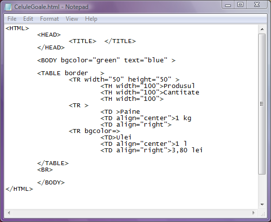
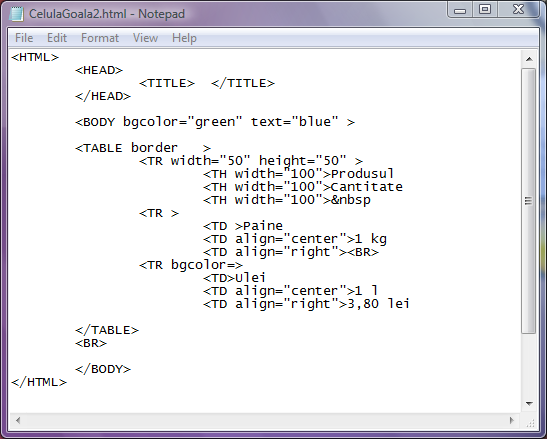

Tabel cu celule vide
Daca in unele dintre celulele tabelului nu sunt stocate date (celulele sunt vide), atunci imaginea tabelului
va fi deosebit de inestetica in sensul ca acele celule si chenarel;e lor nu vor fi afisate, ca si cand nici nu ar
exista. Iata mai jos un exemplu de tabel cu celule vide:(click pe cod pentru afisarea paginii web)

Pentru rezolvarea acestei probleme de estetica, dupa eticheta TD sau TH a celulei se va trece in locul
continutului sau (caracter spatiu, no break space), sau o eticheta BR, ca in imaginea de mai jos:
(click pe cod pentru a deschide pagina web)

In exemplul de mai sus, utilizand sau eticheta BR, chiar daca celulele raman vide macar chenarele lor sunt trasate.
Inapoi la Tabele....